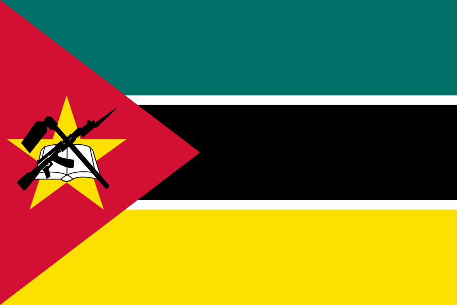
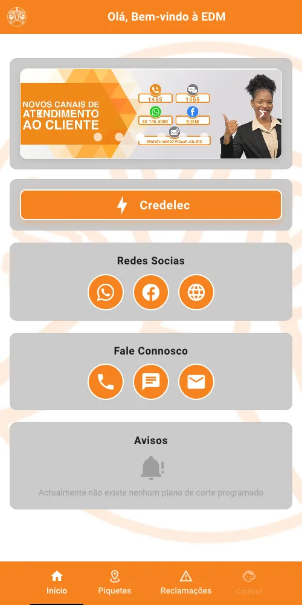
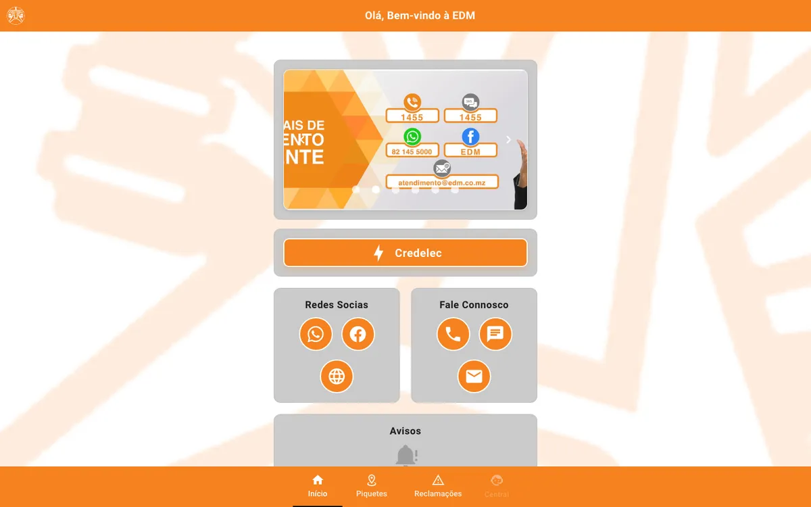

Desenvolvimento
Web, mobile e APIs com Laravel, Vue/Quasar, Next.js, NestJS, React Native e Spring Boot.
Disponível para novos projectos
Engenheiro de Software · QA · CI/CD
Construo, testo e mantenho em produção sistemas de criticidade elevada em Moçambique — do e-EDM, da Electricidade de Moçambique, à venda de energia pré-paga do FUNAE. Na UnISCED lidero as tecnologias educativas que suportam o ensino a distância de mais de 30 mil estudantes, e desenvolvo ainda plataformas de governo, pagamentos e IA para o meio rural.
01 — Sobre
Sou Engenheiro Informático especialista em desenvolvimento de software, CI/CD e garantia de qualidade (QA), com mais de 5 anos no desenvolvimento, teste e manutenção em produção de aplicações web, móveis e APIs de criticidade elevada.
Planeio e executo testes manuais e automatizados (funcionais, regressão, integração e API), desenho casos de teste e faço gestão de defeitos lado a lado com as equipas de desenvolvimento. Trabalho diariamente com web services REST/JSON, integrações de pagamentos e de sistemas de terceiros, pipelines CI/CD e ambientes ágeis.
Rigoroso, analítico e atento ao detalhe — tanto a trabalhar de forma autónoma como em equipa.

Português (nativo)Web, mobile e APIs com Laravel, Vue/Quasar, Next.js, NestJS, React Native e Spring Boot.
Planos e casos de teste, automação com Jest e Playwright, testes de API com Postman, regressão contínua.
GitHub Actions, Jenkins, Docker, Kubernetes, Nginx/PM2 e observabilidade com Prometheus e Grafana.
M-Pesa, e-Mola, mKesh, ERP Primavera, SMS/USSD, ETL, conciliação e migração de dados.
02 — Experiência
03 — Projectos
Uma selecção do que desenvolvi, testei e mantenho — de apps com mais de 100 mil utilizadores a plataformas institucionais. As apps móveis que publiquei (e-EDM, Fénix Delivery, Mahala, Freshcut, Gentleman's Barber Shop) estão na Google Play ↗ e na App Store ↗.


Aplicação web e móvel oficial da EDM, usada por mais de 100 mil utilizadores para compra de Credelec, reclamações, piquetes, avisos de cortes e contacto com o cliente. Desenvolvimento, testes de regressão, testes de API e manutenção contínua em produção.
…e mais sistemas internos, APIs e integrações que não são públicos.
04 — Competências
05 — Formação
Universidade Zambeze · Beira, Moçambique
Durante o curso integrei a equipa de desenvolvimento da própria universidade, onde construí o Sistema de Gestão Académica em PHP/Laravel e a plataforma de ensino a distância em Moodle.
06 — Contacto
Projectos, consultoria em QA/CI-CD ou uma conversa sobre o seu sistema — respondo rápido.